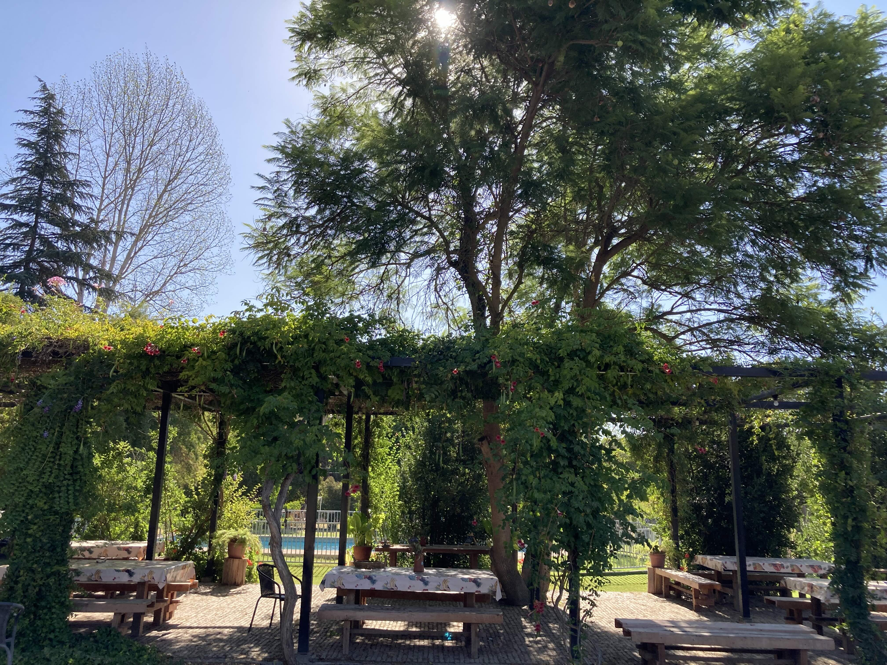

Tener un pedazo de campo cerca de Santiago, sin el cacho de mantenerlo.
Nos pasó lo que probablemente te está pasando a ti: la ciudad agota. Queríamos que nuestros hijos crecieran tocando la tierra, entendiendo los ciclos de la naturaleza y teniendo un refugio donde el fin de semana significara desconexión real para la familia.
Pero seamos honestos: comprar y mantener una parcela solos es caro y, muchas veces, un problema. Llegas el viernes a descansar y terminas cortando el pasto, arreglando la bomba de agua o pagándole a un cuidador. Por eso decidimos abrir nuestra hectárea en Paine y armar una tribu. Nosotros mantenemos la piscina, el huerto y el quincho. Tú te encargas de ir, ensuciarte las manos si quieres, y descansar.
Nuestra Historia
De vender software corporativo a vivir 11 años de la tierra.
Soy Jorge. A los 26 años estaba cerrando contratos de millones de dólares en Oracle y trabajando en la vorágine corporativa de IBM. Tenía éxito, pero sentía que me faltaba tierra.
El 2013 renuncié a todo, tomé un sabático y me fui a vivir solo a mi parcela en El Vínculo, Paine. Ahí fundé Quillagua. Durante 11 años me dediqué a conectar a pequeños agricultores con corporaciones, llevando bienestar laboral a más de 2.500 personas en empresas como Mercado Libre y Nestlé.
Aprendí del campo a la fuerza. Aprendí de cosechas, de comercio justo y de los ritmos de la naturaleza. Hoy, de vuelta en Santiago con mi señora Fran, y mis hijos Gaspar y Pascuala, nos dimos cuenta de que esa necesidad vital de tocar la tierra es colectiva.
El Otro Huerto es el resultado de unir la eficiencia que aprendí en el mundo corporativo con la paz que te da el campo.
Transparencia
¿Quieres saber cómo funciona?
Para cuidar la confianza y la privacidad del grupo, la información logística, ubicación exacta, infraestructura y el modelo de suscripción están en una sección privada.
Si resuenas con esta forma de vivir, pide tu llave de acceso llenando un breve formulario.
Ingresa la clave que te enviamos por WhatsApp para ver los detalles.
Clave incorrecta. Revisa si hay un error de tipeo.
Información Exclusiva
Qué bueno que entraste.
Aquí están los números, la logística y cómo funciona esto por dentro. Cero letra chica.
Dónde estamos y qué hay
El campo está ubicado en El Vínculo, Paine. A unos 40 minutos de Santiago, dependiendo del tráfico. Ya contamos con toda la infraestructura de mis años en turismo rural con Quillagua.
Parque y Piscina: Una piscina de 15x5 metros, mantenida impecable todo el año.
Quincho y Fuego: Un quincho full equipado con cocina, horno de barro, parrilla y refrigeración.
El Huerto: Derecho a recolectar y llevarte a casa la fruta y verdura de estación.
Alojamiento: Opción de alojar un fin de semana cada tres meses en nuestra sala de yoga acondicionada (próximamente refugios privados).

El modelo de suscripción
Queremos que este refugio sea sostenible a largo plazo. El modelo se basa en compartir los costos reales de mantención de una parcela de este nivel.
Suscripción Mensual: $150.000 por familia (acceso ilimitado fines de semana y festivos).
Cuota de Incorporación: $0 para las primeras 7 familias fundadoras. Para las siguientes, tiene un valor único de $50.000.
El siguiente paso
Lo lógico es que vengas un fin de semana, traigas a los niños, se ensucien las manos en la huerta, vean el espacio y nos tomemos un café antes de decidir.